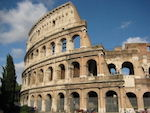

Italy: A land of art and history
Italy is a synonym for culture, art, and history.Artistic wonders can be found everywhere, and every corner of the country holds countless and wonderful surprises. Italy's artistic and cultural heritage is one of the most valuable in the world. Rome, Florence, Assisi, Venice, Siena, Pisa, and Naples are its most renowned cities of art, but the whole country can boast towns of breathtaking beauty.Tourists can explore and discover the private residences of ancient and noble. families; visit world famous museums such as the Uffizi Gallery in Florence, the Vatican Museum in Rome, or the Brera Art Gallery in Milan; explore impressive archaeological sites such as Pompei to immerse themselves in an exciting, grandiose past. That is by no means all. Many other cultural, artistic, and musical events animate Italian life.
To learn more:
- Rome
- Florence
- Venice
- Assisi
- Siena
- Pisa
- Naples
- Milan
- Pompei